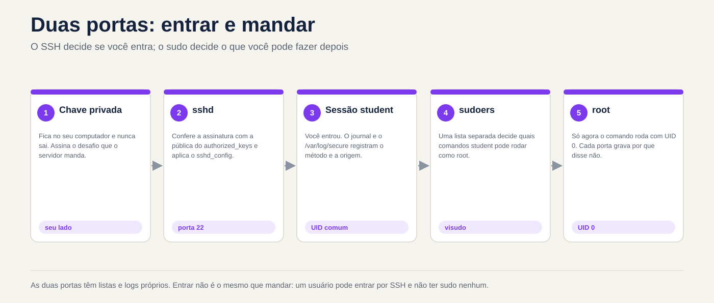
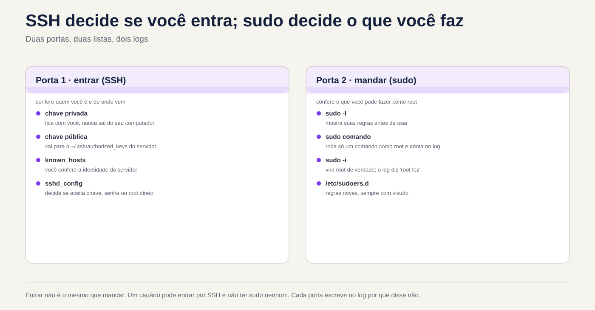

Lezione 2.5 · Accesso remoto e privilegi
Quinta lezione del Modulo 2. Quasi tutto il lavoro su un server inizia con due cose: entrarci e acquisire il potere di cambiarlo. Entrambi sembrano semplici finché non falliscono. La chiave che "ha sempre funzionato" inizia a chiedere la password perché qualcuno ha inserito chmod nella cartella sbagliata. La regola in sudo creata ieri non è valida perché il file ha un punto nel nome. Appare l'avviso che l'identità del server è cambiata e il tecnico lo cancella senza pensarci. Oggi imparerai come SSH decide se farti entrare, come sudo decide cosa puoi fare e dove tutti lasciano scritto il motivo quando dicono di no. Alla fine, accedi da una VM all'altra senza password, con un breve nickname e sai come leggere il registro quando smette di funzionare.
| File | lezione 2.5 |
|---|---|
| Modulo | M2 · Sistema, utenti e permessi, lezione 5 di 8 |
| Quando | Settimana 5 |
| Alla fine puoi | Indica quale tipo di account possiede ciascun utente tramite UID e shell; utilizzare sudo, sudo -i e su - sapendo cosa cambia in ognuno di essi; leggere e creare regole in /etc/sudoers.d con visudo; verificare l'identità di un server alla prima connessione; creare una chiave SSH, installarla su un altro server e accedere senza password; utilizzare ~/.ssh/config per i soprannomi; copiare file con scp e rsync; modificare la configurazione di sshd con un proprio file, testare prima dell'applicazione e verificare il valore; trovare nel registro il motivo per cui un login o un sudo è stato rifiutato |
| Articoli di prova | LE 015.1 (sicurezza di base e tipi di utente: root, utente normale, account di sistema; id, who, w, last, su, sudo) · LPIC-1 110.1 (attività di amministrazione della sicurezza: sudo, su, who, w, last) · LPIC-1 110.3 (protezione dei dati con crittografia: chiavi OpenSSH, ssh-agent, known_hosts, authorized_keys) · RHCSA (accesso a sistemi remoti con SSH; configurazione dell'autenticazione tramite chiave; trasferimento di file in modo sicuro; cambio utente; concessione sudo) |
| Prerequisiti | lezione 2.4 (la scala della rete; righe rocky-lab e debian-lab in /etc/hosts); lezione 2.3 (journalctl -u); lezione 1.4 (permessi letti con ls -l) |
| Tempo | Intorno alle 2:30 |
| Istantanee | m2a5-start e m2a5-end in entrambe le VM |
1 · Riscaldamento
Tre domande, appena mi vengono in mente. Scrivi le risposte; la chiave di risposta viene visualizzata alla fine.
- Sono mesi che accedi a un server con una chiave SSH. Oggi chiede una password. Indovina: il problema è con il tuo computer o con il server?
- Su Windows, un amministratore fa clic su "Esegui come amministratore". Indovina: su Linux,
sudoapre una sessione root o esegue semplicemente un comando come root? - La prima volta che accedi tramite SSH a un server, viene richiesto
Are you sure you want to continue connecting (yes/no)?. Indovina: cosa protegge questa domanda?
2 · Perché è importante
La password su SSH è il primo obiettivo di qualsiasi server esposto. Basta guardare il log di un server con la porta 22 aperta verso internet: migliaia di tentativi al giorno, con root, admin, test, oracle. La chiave SSH risolve questo problema, ma solo per coloro che capiscono cosa stanno facendo. La chiave privata copiata sul server sbagliato, authorized_keys con chiavi di qualcuno che ha lasciato l'azienda tre anni fa e la cartella .ssh con autorizzazione aperta sono risultati comuni in ogni audit.
Con sudo è lo stesso. Una buona regola dice chi può fare cosa e il registro mostra chi lo ha fatto. Una regola sbagliata dà ALL a tutti, oppure viene modificata senza visudo e smette di essere valida senza preavviso. E l'abitudine di inserire come root cancella direttamente la traccia: nel log risulta "root did", e nessuno sa quale dei cinque tecnici fosse.
Il terzo punto è l'avviso di identità. Quando SSH dice che la chiave del server è cambiata, potrebbe trattarsi semplicemente di una reinstallazione. Potrebbe anche essere un'altra macchina che risponde al suo posto. Chiunque cancelli l'avviso senza controllare si allena a ignorare l'unico allarme di cui dispone SSH.
3 · Modello mentale
Enter e send sono due porte diverse. SSH decide se accedi;
sudodecide cosa puoi fare dopo. Ognuno ha la sua lista e ognuno scrive nel registro il motivo per cui ha detto di no.
Seu computador Servidor
────────────── ────────
~/.ssh/known_hosts ◄── confere ─── /etc/ssh/ssh_host_*_key.pub "é mesmo esse servidor?"
~/.ssh/id_ed25519 ─── prova ────► ~/.ssh/authorized_keys "você tem a chave privada
(privada, fica aqui) (só as públicas) de uma destas públicas?"
sshd_config + sshd_config.d "esse método é permitido?"
│
▼ entrou como rodrigo
/etc/sudoers + sudoers.d "rodrigo pode rodar isto
como root?"
journal / /var/log/secure "por que disse não"Quattro idee guidano la lezione:
| Idea | Cosa intendi | Conseguenza |
|---|---|---|
| La chiave ha due metà | Il bagno resta con te e non se ne va mai; quello pubblico va ad ogni server in cui vuoi entrare | Se qualcuno ti chiede la chiave, la risposta è sempre .pub |
| Le due parti si conferiscono | Il server controlla la tua chiave in authorized_keys; puoi controllare il server in known_hosts | L'avviso di identità modificata è il tuo lato che dice "non sei quello che eri" |
sshd è sospetto | Se la vostra cartella Inizio, .ssh o authorized_keys può essere modificata da altri, ignora il | La chiave che ha smesso di funzionare ha quasi sempre l'autorizzazione o il proprietario sbagliato sul server |
sudo è a comando e lascia traccia | Ogni sudo viene controllato nel regolamento e annotato nel log con il suo nome | Preferisci sudo comando all'accesso come root; il registro indica chi ha eseguito l'operazione |


4 · Concetto a più livelli
Essenziale
Che tipo di account è questo. Ogni account ha un numero, l'UID. Il sistema decide chi è chi in base al numero, non al nome:
id # u: UID, gruppo principale, tutti i gruppi
id root
getent passwd root rodrigo chronyd # ogni riga in /etc/passwdroot:x:0:0:root:/root:/bin/bash
rodrigo:x:1000:1000:Rodrigo:/home/rodrigo:/bin/bash
chronyd:x:994:991:chrony system user:/var/lib/chrony:/sbin/nologin| Campo | Esempio | Voglio dire |
|---|---|---|
| 1 · nome | rodrigo | Il nome immesso |
| 2 · password | x | La password è in /etc/shadow, che solo root legge |
| 3 · IDU | 1000 | Il numero di conto |
| 4 · GID | 1000 | Il gruppo principale |
| 5 · descrizione | Rodrigo | Testo libero, nome completo |
| 6 · cartella personale | /home/rodrigo | Dove inizia il login |
| 7 · conchiglia | /bin/bash | Il programma che viene eseguito all'accesso. /sbin/nologin o /usr/sbin/nologin = non inserire |
Tre tipi di conto, per UID:
| Digitare | UID | Per cosa | Shell tipica |
|---|---|---|---|
| radice | 0 | L'amministratore. Il kernel non concede l'autorizzazione per UID 0 | /bin/bash |
| Conto di sistema | da 1 a 999 | Con esso viene eseguito un servizio (chronyd, sshd, apache), quindi non viene eseguito come root | nologin |
| Utente comune | 1000 in poi | Persone | /bin/bash |
Il nome root non è niente di speciale: qualsiasi account con UID 0 è root. Una seconda riga con UID 0 in /etc/passwd è uno dei primi segnali di intrusione che un audit cerca.
Chi è qui. Tre comandi, dal più breve al più completo:
whoami # chi sono io adesso
who # chi ha effettuato l'accesso, da dove
w # chi ha effettuato l'accesso e cosa sta facendo
last -n 10 # gli ultimi accessi, compresi quelli già uscitisudo: un comando come root. sudo chiede la tua password, controlla le regole se puoi, esegue il comando e lo scrive nel log:
sudo whoami # radice
sudo -l # cosa posso fare con sudoDopo la prima password, sudo fa non chiedere più per qualche minuto (5, per impostazione predefinita). sudo -k dimentica subito la password.
Accedi a un'altra macchina. SSH è già quello che usi per accedere alle VM:
ssh rodrigo@10.1.0.52 # utente@macchina
ssh debian-lab # stesso utente che sei adesso; /etc/nome host
ssh debian-lab 'uptime' # eseguire un comando andata e ritorno
exit # uscire dalla sessione remotaIntermediate
sudo -i, su - e sudo su. I tre aprono una shell di root e non sono la stessa cosa:
| Comando | Chiede la password a qualcuno | Rimane nel registro | Ambiente |
|---|---|---|---|
sudo comando | Tuo | Ogni comando, con il suo nome | Vostro, con l'assicurazione PATH |
sudo -i | Tuo | L'apertura della conchiglia, con il suo nome; quello che fai dentro, no | Quello root, come in un login |
su - | Radice | Ma qualcuno è diventato root | Quello root, come in un login |
sudo su | Tuo | Che hai eseguito su | Ereditato a metà: evita |
su - richiede che root abbia una password e che tu la conosca, il che significa che ogni tecnico conosce la stessa password. Su un server ben configurato, la password di root viene salvata e nessuno la usa quotidianamente: ognuno entra con il proprio nome e usa sudo. - (o -l) di su è importante: senza di esso diventi root nel tuo ambiente utente e i comandi di /usr/sbin potrebbero non essere trovati.
Chi può usare sudo. Le regole sono in /etc/sudoers e nei file /etc/sudoers.d/. La linea che conta in Rocky:
%wheel ALL=(ALL) ALLE in Debian:
%sudo ALL=(ALL:ALL) ALL| Pezzo | Voglio dire |
|---|---|
%wheel | Chi: % significa gruppo. Senza % si tratta di un utente |
ALL= | Su quali macchine si applica la regola? In pratica sempre ALL |
(ALL) o (ALL:ALL) | Come puoi eseguire: qualsiasi utente (e qualsiasi gruppo) |
ALL alla fine | Cosa comanda. Può essere un elenco con il percorso completo |
Per dare sudo a qualcuno, la regola pratica è inserirlo nel gruppo, non scrivere una nuova regola: wheel in Rocky, sudo in Debian. Per dare un solo comando creare un file in /etc/sudoers.d/, sempre con visudo:
sudo visudo -f /etc/sudoers.d/backupbackup ALL=(root) NOPASSWD: /usr/bin/systemctl restart chronydO visudo apre l'editor, e al salvataggio controlla la sintassi; Se c'è un errore, chiede prima di registrare. sudo visudo -c controlla tutti i file contemporaneamente.
L'identità del server. Alla prima connessione, SSH mostra l'impronta digitale della chiave del server:
The authenticity of host 'debian-lab (10.1.0.52)' can't be established.
ED25519 key fingerprint is SHA256:Qm3k...x9E.
Are you sure you want to continue connecting (yes/no/[fingerprint])?La cosa giusta da fare è confrontarla con l'impronta digitale che il server stesso mostra, in un altro modo (la console Proxmox, la documentazione):
ssh-keygen -lf /etc/ssh/ssh_host_ed25519_key.pub # sul serverSe corrispondono, yes. La chiave va al tuo ~/.ssh/known_hosts e da quel momento in poi SSH la controlla da sola per ogni connessione.
Chiave SSH in quattro comandi.
ssh-keygen -t ed25519 -C "rodrigo@rocky-lab" # crea la coppia; chiedere una passphrase
ls -l ~/.ssh/ # id_ed25519 (privato) e id_ed25519.pub (pubblico)
ssh-copy-id debian-lab # installa lì quello pubblico; chiede la password un'ultima volta
ssh debian-lab # entrare con la chiaveIl ssh-copy-id aggiunge la chiave pubblica al ~/.ssh/authorized_keys dall'altra parte e imposta le autorizzazioni. Ogni riga di questo file è una chiave che può essere immessa come utente.
La passphrase protegge la chiave privata se qualcuno copia il file. Per evitare di digitarlo ad ogni connessione, ssh-agent mantiene in memoria la chiave aperta per tutta la durata della sessione:
eval "$(ssh-agent -s)"
ssh-add # chiede la passphrase una volta
ssh-add -l # le chiavi che l'agente conservaCopia file. scp copia come cp, con máquina: davanti al percorso remoto:
scp arquivo.txt debian-lab:/tmp/ # da qui a lì
scp debian-lab:/etc/os-release ./ # da lì a quiPer cartelle e copie ripetute, rsync copia solo ciò che è cambiato:
rsync -av pasta/ debian-lab:~/pasta/ # -a conserva permessi e date; -v mostra
rsync -av --dry-run pasta/ debian-lab:~/pasta/ # Mostra cosa faresti, senza fareLa barra finale di pasta/ cambia tutto: con la barra copia il contenuto della cartella; senza barra, copia la cartella all'interno della destinazione. In caso di dubbio, --dry-run.
Ponte Windows
| Su Windows | Su Linux | Cosa cambia |
|---|---|---|
| Gruppo Amministratori | Gruppo wheel (Rocky) o sudo (Debian) | Essere nel gruppo da soli non fa nulla: ordini comunque con sudo |
| "Esegui come amministratore" (UAC) | sudo comando | Un comando alla volta, con la tua password, annotata nel registro |
runas /user:outro | sudo -u outro comando | |
| Account amministratore integrato | root | Su un server ben configurato, nessuno accede direttamente come root |
| Desktop remoto, comunicazione remota PowerShell | ssh | Testo, non schermo; lo stesso protocollo per inserire e copiare |
| PuTTY e spettacolo | ssh e ssh-agent | Windows 10 e 11 dispongono già di OpenSSH: ssh funziona in PowerShell |
| WinSCP | scp, sftp, rsync | |
Digitare C:\Users\voce\.ssh\ | Tasti in ~/.ssh/ | Stesso formato. Su Windows non c'è ssh-copy-id: vedi sotto |
Dal tuo PC Windows alle VM, senza ssh-copy-id, tramite PowerShell:
ssh-keygen -t ed25519
type $env:USERPROFILE\.ssh\id_ed25519.pub | ssh rodrigo@10.1.0.51 "mkdir -p ~/.ssh && chmod 700 ~/.ssh && cat >> ~/.ssh/authorized_keys && chmod 600 ~/.ssh/authorized_keys"Advanced
Perché sshd rifiuta una determinata chiave. Con StrictModes yes, quello predefinito, sshd controlla il proprietario e i permessi della tua cartella Inizio, ~/.ssh e ~/.ssh/authorized_keys. Se qualcuno di questi può essere modificato dal gruppo o da altri, salta i tasti e passa al metodo successivo, solitamente la password. Il cliente non sa perché: vede solo la richiesta di password. Il motivo è nel registro del server:
Authentication refused: bad ownership or modes for directory /home/rodrigo| Percorso | Autorizzazione protetta |
|---|---|
~ (la cartella home) | Divieto di scrittura per gruppi e altri: 700 o 755 |
~/.ssh | 700 |
~/.ssh/authorized_keys | 600 |
~/.ssh/id_ed25519 (privato, a carico del cliente) | 600. Troppo aperto, lo stesso ssh rifiuta: UNPROTECTED PRIVATE KEY FILE! |
~/.ssh/config (sul cliente) | 600. Troppo aperto: Bad owner or permissions |
In Rocky c'è una seconda causa: SELinux. Un authorized_keys creato in /tmp e spostato con mv porta l'etichetta sbagliata e sshd non può leggerlo. restorecon -Rv ~/.ssh risolve. SELinux ha il proprio modulo successivo; per ora, tieni presente che una chiave rifiutata in Rocky con determinate autorizzazioni è il prossimo sospettato.
ssh -v mostra la conversazione. Sul lato client, -v mostra ogni metodo provato:
debug1: Offering public key: /home/rodrigo/.ssh/id_ed25519 ED25519 SHA256:...
debug1: Authentications that can continue: publickey,password
debug1: Next authentication method: password"Offerta" seguita da "può continuare" significa che il server ha ricevuto la chiave e non l'ha accettata. Se la riga "Offerta" non appare nemmeno, il problema è dalla tua parte: la chiave non esiste, è con un altro nome oppure ~/.ssh/config punta a qualcos'altro.
La configurazione di sshd è valida per il primo valore. /etc/ssh/sshd_config inizia con Include /etc/ssh/sshd_config.d/*.conf e i file vengono letti in ordine alfabetico. Per la maggior parte delle opzioni, il primo valore trovato è valido e quelli successivi vengono ignorati. Ecco perché il tuo file deve avere un numero basso, come 10-empresa.conf: un 99-empresa.conf perde contro il 50-redhat.conf di Rocky in tutto ciò che entrambi definiscono. Il modo per sapere cosa vale davvero:
sudo sshd -t # controlla la sintassi; nessuna via d'uscita = ok
sudo sshd -T | grep -i passwordauthentication # quanto vale, dopo aver letto tuttoÈ cambiato? sudo sshd -t prima, systemctl reload dopo e una seconda sessione aperta durante il test. Un errore in sshd_config con l'unica sessione chiusa va alla console.
~/.ssh/config, nickname e pattern. Sul client, un file unisce ciò che digiteresti ogni volta:
Host deb
HostName debian-lab
User rodrigo
IdentityFile ~/.ssh/id_ed25519
Host *
ServerAliveInterval 60ssh deb, scp arquivo deb:/tmp/ e rsync ... deb: iniziano a utilizzare tutto questo. ServerAliveInterval invia un segnale ogni 60 secondi e impedisce ai firewall di eliminare la sessione interrotta.
sudoers.d ignora i file con un punto. sudo legge i file da /etc/sudoers.d/ ma salta quelli che hanno . nel nome o terminano in ~. Un /etc/sudoers.d/backup.conf viene ignorato senza preavviso. È la causa numero uno del "Ho creato la regola e non funziona". E la riga #includedir /etc/sudoers.d alla fine del /etc/sudoers di Rocky non è un commento, nonostante #: è l'istruzione che legge la cartella. In Debian 13 appare come @includedir, che fa lo stesso.
Il sudo e il registro SSH.
sudo journalctl _COMM=sudo -n 10 # l'ultimo sudo, in entrambi
sudo journalctl -u sshd -n 20 # roccioso; su Debian, -u ssh
sudo tail -20 /var/log/secure # Rocky: sudo, su e SSH nello stesso fileCosa è testato
- LE 015.1: root, utente comune e account di sistema; ID 0;
id,whoami,who,w,last;su×sudo;/etc/passwd,/etc/shadow,/etc/group(per riconoscere i campi). - LPIC-1 110.1:
sudo,/etc/sudoers,visudo,su -;who,w,last; trova account con UID 0 o senza password. - LPIC-1 110.3:
ssh-keygen,ssh-copy-id,ssh-agent,ssh-add;~/.ssh/known_hosts,~/.ssh/authorized_keys,~/.ssh/id_*; le chiavi del server in/etc/ssh/ssh_host_*; tipi di chiave (RSA, ECDSA, Ed25519). - RHCSA: ingresso tramite SSH; configurare l'autenticazione con chiave tra due macchine; copiare file con
scp,sftporsync; cambiare utente consu; daresudoad un utente o gruppo; modificarePermitRootLoginoPasswordAuthenticatione verificare. Nel test, una virgola sbagliata insudoerssenzavisudopuò costare l'intera domanda.
5 · Rocky × Debian
| Cosa | Roccioso 9 | Debian13 |
|---|---|---|
Gruppo con sudo | wheel | sudo |
Inclusione di sudoers.d | #includedir /etc/sudoers.d | @includedir /etc/sudoers.d |
| Unità SSH | sshd.service | ssh.service (il nome sshd funziona anche come soprannome) |
| File aggiuntivo del produttore | /etc/ssh/sshd_config.d/50-redhat.conf | Nessuno per impostazione predefinita |
Log di sudo, su e SSH | /var/log/secure e il giornale | Solo il giornale, perché rsyslog non è installato |
known_hosts | Nomi leggibili | Nomi criptati (HashKnownHosts yes in /etc/ssh/ssh_config): cercare con ssh-keygen -F nome |
PermitRootLoginpreimpostazione | prohibit-password (solo root con chiave), a meno che non sia stata selezionata un'altra opzione durante l'installazione | prohibit-password |
| Shell degli account di sistema | /sbin/nologin | /usr/sbin/nologin |
| UID primo utente | 1000 | 1000 |
| Password di root | Impostato o bloccato a seconda dell'installazione: sudo passwd -S root | Se durante l'installazione avete fornito a root una password, il primo utente non entrerà nel gruppo sudo |
last | Già installato | Se mancante, sudo apt install wtmpdb e utilizzare wtmpdb last |
rsync | dnf install rsync se manca | apt install rsync se manca |
SELinux esamina ~/.ssh | Sì | No (Debian non attiva SELinux) |
6 · Laboratorio guidato
In questo laboratorio le due VM parlano tra loro: rock-lab è il "tuo computer" e debian-lab è il "server". Tieni aperto un terminale in ognuna, dal tuo PC, come nelle lezioni precedenti. I passaggi indicano su quale VM eseguire. I nomi rocky-lab e debian-lab provengono da /etc/hosts che hai modificato nella Lezione 2.4; se getent hosts debian-lab risulta vuoto in Rocky-Lab, aggiungere la riga prima di iniziare.


Passaggio 0 · Istantanea
In Proxmox, acquisire uno snapshot m2a5-inicio delle due VM. In questo laboratorio tocchi sshd e sudo, le due porte da cui entri. Se li chiudi entrambi, la console Proxmox e l'istantanea saranno al tuo fianco.
Passo 1 · Chi è chi negli account
In Rocky-Lab:
id
whoami
getent passwd root "$USER"
awk -F: '$3 == 0 {print $1}' /etc/passwd # chi ha UID 0
awk -F: '$3 >= 1 && $3 < 1000 {print $1, $3, $7}' /etc/passwd # conti di sistema
awk -F: '$3 >= 1000 && $3 < 60000 {print $1, $3, $7}' /etc/passwd # personeIl primo awk dovrebbe elencare solo root. La seconda elenca decine di account, quasi tutti con nologin alla fine: si tratta di servizi. La terza parte deve elencare solo te. Il limite di 60000 rimuove dall'elenco l'account nobody (UID 65534), che nonostante il numero elevato è un account di sistema.
Ora chi c'è sulla macchina:
who
w
last -n 5who mostra le vostre sessioni SSH, con l'IP del vostro PC tra parentesi. w mostra anche cosa è in esecuzione ciascuna sessione e da quanto tempo è stata interrotta. last legge la cronologia: inclusi gli accessi già terminati e i riavvii.
Ripeti in debian-lab. Lì, la shell degli account di sistema appare come /usr/sbin/nologin. Se last non esiste, installa il sostituto: sudo apt install wtmpdb e usa wtmpdb last -n 5.
Decidi 1 · La riga strana. In un audit, il getent passwd di un server client mostra, tra gli account normali, questa riga:
suporte:x:0:1001:Suporte Externo:/home/suporte:/bin/bashChe cos'è?
- A) Un utente normale: il nome non è
roote la cartella home è in/home. - B) Un secondo account root, con un altro nome. Da indagare.
- C) Un account di sistema, perché il nome proviene da un servizio.
- D) Innocuo, perché il gruppo principale è 1001, che è per un utente comune.
Scegliere la lettera prima di guardare la tabella.
| Se hai selezionato | Risultato | Perché |
|---|---|---|
| A | ❌ Sbagliato | Il sistema non guarda il nome o la cartella: guarda l'UID. Con UID 0 chi entra come suporte ha tutto il potere di root. |
| B | ✅ Giusto | L'UID 0 è root, qualunque sia il nome. Potrebbe essere una scorciatoia creata da un vecchio tecnico o una backdoor. In entrambi i casi non è una correzione che fai da solo: scrivila, mostrala al responsabile e vedi nel last suporte chi l'ha utilizzata. |
| C | ❌ Sbagliato | L'account di sistema ha un UID compreso tra 1 e 999 e generalmente nologin. Questo ha UID 0 e /bin/bash. |
| D | ❌ Sbagliato | Il gruppo principale non limita nulla. Il kernel non concede l'autorizzazione all'UID 0, qualunque sia il gruppo. |
Da risolvere: il numero è in carica. awk -F: '$3 == 0' /etc/passwd dovrebbe elencare solo root.
Passaggio 2 · sudo e su e la traccia di ciascuno
In rocky-lab:
getent group wheel # dovresti apparire alla fine della riga
sudo -l # cosa puoi fare?
sudo -u nobody id # esegui come un altro utente, non solo come root
sudo -k # dimenticare la password
sudo -n true; echo "rc=$?" # -n = non chiedere; nessuna password salvata, erroreIl sudo -l termina con una riga (ALL) ALL: deriva dalla regola del gruppo wheel. sudo -n risponde a a password is required e rc=1. Ecco come uno script scopre, senza bloccarsi, che avrebbe bisogno di una password.
Ora i tre modi per diventare root. Eseguirli tutti, guardare l'output ed uscire con exit:
sudo -i
whoami; pwd; echo "$HOME"
exitSei root, in /root, con l'ambiente root. Ora su -:
sudo passwd -S root
su -passwd -S mostra lo stato della password root. Se appare L o LK, la password è bloccata e su - fallirà con Authentication failure. Questo è normale su un server ben configurato: nessuno usa la password di root. Se appare P o PS e conosci la password, su - funziona e richiede la password di root, non la tua. Non creare o modificare la password di root per questo passaggio.
Ora il percorso. In rocky-lab:
sudo journalctl _COMM=sudo -n 6 --no-pager
sudo grep -E 'sudo|su:' /var/log/secure | tail -6Ogni sudo appare con il tuo nome, la directory in cui ti trovi e il comando completo: rodrigo : TTY=pts/0 ; PWD=/home/rodrigo ; USER=nobody ; COMMAND=/usr/bin/id. sudo -i appare come COMMAND=/bin/bash e ciò che hai fatto al suo interno non appare. Questo è il prezzo per restare in una shell root.
Ripeti in debian-lab, cambiando wheel in sudo in getent group e saltando grep di /var/log/secure, che lì non esiste: il journal memorizza tutto.
Decidi 2 · Venti minuti di root. Stai per indagare su un problema e devi eseguire una sequenza di comandi come root per qualche ventina di minuti. L'azienda richiede di sapere chi ha eseguito ciascuna manutenzione. Quale usi?
- A)
sudo -i - B)
su - - C)
sudo su - D)
su, senza trattino
Scegli la lettera prima di guardare la tabella.
| Se hai selezionato | Risultato | Perché |
|---|---|---|
| A | ✅ Giusto | Richiede la tua password, lascia nel registro che tu ha aperto la shell di root e fornisce l'ambiente di root, come un login. Affinché il percorso sia completo, l'opzione migliore è sudo comando per ogni comando, ma per una sessione lunga sudo -i è quella predefinita. |
| B | ⚠️ Funziona, ma | Diventi root, ma avevi bisogno della password di root, che poi sarà conosciuta da più persone. Il log dice che qualcuno è diventato root dalla tua sessione, ma la politica "ognuno con il proprio nome" non è più valida quando tutti conoscono la stessa password. |
| C | ⚠️ Funziona, ma | Il registro mostra che hai eseguito su, quindi la traccia esiste. Ma ci sono due programmi che fanno il lavoro di uno solo, e l'ambiente è per metà ereditato. sudo -i fa lo stesso, giusto. |
| D | ❌ Sbagliato | Richiede la password di root e mantiene il tuo ambiente. In Debian, il PATH dell'utente non ha /usr/sbin e comandi come useradd danno command not found. |
Per risolvere: shell root con traccia = sudo -i. Solo un comando = sudo comando.
Passo 3 · La prima connessione e l'identità del server
In debian-lab, trovare l'impronta digitale della chiave del server:
ssh-keygen -lf /etc/ssh/ssh_host_ed25519_key.pubNotare il bit dopo SHA256:. Da rocky-lab, connettiti:
ssh debian-labSSH mostra ED25519 key fingerprint is SHA256:... e ti chiede se ti fidi. Confronta con quello che hai scritto. Se è lo stesso, yes e inserisci la tua password utente debian-lab. Al suo interno:
hostname
who # la tua sessione proveniente da 10.1.0.51 (o da Rocky-Lab)
exitSe SSH non ha chiesto nulla, ti eri già connesso prima: ssh-keygen -F debian-lab mostra la riga salvata.
Ora guarda cosa è stato salvato, in rocky-lab:
cat ~/.ssh/known_hosts
ssh-keygen -F debian-labIn Rocky, la riga inizia con il nome debian-lab, leggibile. SSH memorizza il nome che hai inserito: un ssh 10.1.0.52 te lo chiederebbe di nuovo, perché per questo si tratta di un'altra registrazione.
Ora al contrario. Nel laboratorio roccioso, esegui ssh-keygen -lf /etc/ssh/ssh_host_ed25519_key.pub e scrivi la sua impronta digitale. In debian-lab, connettersi, confrontare prima di yes e inserire la password:
ssh rocky-lab hostname
cat ~/.ssh/known_hosts
ssh-keygen -F rocky-labIn Debian, la riga known_hosts inizia con |1| seguita da lettere: il nome è criptato (HashKnownHosts yes). Chi copia il file non scoprirà dove vai di solito. ssh-keygen -F rocky-lab trova comunque la linea.
Passo 4 · Una chiave, installata sull'altro lato
In Rocky-Lab, creare la coppia di chiavi. Quando ti viene chiesta la passphrase, usane una vera: è quella che protegge la chiave se qualcuno copia il file.
ssh-keygen -t ed25519 -C "rodrigo@rocky-lab"
ls -l ~/.ssh/
cat ~/.ssh/id_ed25519.publs -l indica il id_ed25519 privato con -rw------- (600) e il id_ed25519.pub pubblico con -rw-r--r-- (644). Quella pubblica è una sola riga: il tipo, la chiave e il commento.
Decidi 3 · Il file che va. Un collega che amministra debian-lab scrive: "inviami la tua chiave SSH e ti darò l'accesso". Quale file inviare?
- A)
~/.ssh/id_ed25519.pub - B)
~/.ssh/id_ed25519 - C)
~/.ssh/known_hosts - D) Rocky-lab's
~/.ssh/authorized_keys
Scegli la lettera prima di guardare la tabella.
| Se hai selezionato | Risultato | Perché |
|---|---|---|
| A | ✅ Giusto | Il pubblico è fatto per essere distribuito. Va nel authorized_keys del server e solo chi ha la toilette corrispondente può usarlo. |
| B | ❌ Sbagliato | E' quello privato. Chiunque abbia questo file entra in ogni server che si fida di questa chiave come te. Se ha lasciato la tua macchina, la risposta è generarne un'altra e cambiarla ovunque. |
| C | ❌ Sbagliato | È l'elenco delle impronte digitali dei server che tu hai visitato. Non ti dà accesso a nulla e lo consegna dove vai abitualmente. |
| D | ❌ Sbagliato | E' la lista di chi può entrare in rocky-lab. Non c'è niente di tuo, a meno che tu non lo metta lì. |
Da risolvere: la toilette non lascia mai la macchina dove è stata creata. Hanno chiesto la chiave? È .pub.
Ora installa quello pubblico in debian-lab. ssh-copy-id richiede la tua password debian-lab un'ultima volta:
ssh-copy-id debian-labIn debian-lab, controlla cosa ha fatto:
ls -ld ~/.ssh ~/.ssh/authorized_keys
cat ~/.ssh/authorized_keysLa cartella con drwx------ (700), il file con -rw------- (600), e al suo interno la stessa riga di cat ~/.ssh/id_ed25519.pub da rocky-lab.
Torna a rocky-lab e inserisci:
ssh debian-lab hostnameLeggi attentamente ciò che ti chiede. Non è più rodrigo@debian-lab's password:, la password del server. È Enter passphrase for key '/home/rodrigo/.ssh/id_ed25519':, la passphrase della tua chiave, che non viaggia mai attraverso la rete. Per evitare di digitare la frase per ogni connessione, caricare l'agente:
eval "$(ssh-agent -s)"
ssh-add
ssh-add -l
ssh debian-lab hostname # ora senza chiedere nullaL'agente è valido per questo terminale. Chiudi il terminale e scomparirà, insieme alla chiave di apertura in memoria.
Passo 5 · Un nickname e comandi remoti
In rocky-lab, crea ~/.ssh/config:
cat >> ~/.ssh/config <<'EOF'
Host deb
HostName debian-lab
User rodrigo
IdentityFile ~/.ssh/id_ed25519
Host *
ServerAliveInterval 60
EOF
chmod 600 ~/.ssh/configOra è sufficiente deb:
ssh deb hostname
ssh deb 'uptime; df -h /'
ssh -t deb 'sudo systemctl status ssh --no-pager | head -5'-t fornisce alla sessione un terminale e sudo dall'altra parte ne ha bisogno per chiedere la password. Senza -t, il sudo remoto si lamenta di non sapere dove chiedere.
Ora il test che utilizzano gli script. BatchMode=yes impedisce a SSH di chiedere qualsiasi cosa: se avesse bisogno di chiedere una password o una passphrase, fallisce immediatamente invece di bloccarsi.
ssh -o BatchMode=yes -o ConnectTimeout=5 deb true && echo "chave ok"Con l'agente caricato, risponde chave ok. Su un nuovo terminale, senza l'agente, lo stesso comando fallisce con Permission denied: la chiave esiste, ma è chiusa dalla passphrase. Ecco come verificare, in una lista di server, dove funziona già la chiave:
for h in deb; do
printf '%-12s ' "$h"
ssh -o BatchMode=yes -o ConnectTimeout=5 "$h" 'hostname' 2>&1 | head -1
doneOggi la lista ha un solo nome. Nella vita reale, ne ha venti e il loop mostra su uno schermo quali rispondono.
Passo 6 · Copiare i file
In Rocky-Lab, preparare una cartella:
mkdir -p ~/lab-copia/sub
echo um > ~/lab-copia/a.txt
echo dois > ~/lab-copia/sub/b.txtO scp, per un file:
scp ~/lab-copia/a.txt deb:/tmp/
ssh deb cat /tmp/a.txt
scp deb:/etc/os-release ~/os-release-debian
head -2 ~/os-release-debianO rsync deve essere installato ad entrambe le estremità. In rocky-lab:
sudo dnf install -y rsync
ssh -t deb 'sudo apt install -y rsync'Ora copia la cartella, mostrando prima cosa farebbe:
rsync -av --dry-run ~/lab-copia/ deb:lab-copia/
rsync -av ~/lab-copia/ deb:lab-copia/
ssh deb 'find ~/lab-copia -type f'I due file appaiono lì, in ~/lab-copia/a.txt e ~/lab-copia/sub/b.txt. Esegui di nuovo lo stesso rsync: elenca la cartella e non copia nulla, perché non è cambiato nulla. Cambiare un file ed eseguirlo di nuovo:
echo um-mudado > ~/lab-copia/a.txt
rsync -av ~/lab-copia/ deb:lab-copia/ # solo un.txt
sha256sum ~/lab-copia/a.txt
ssh deb sha256sum lab-copia/a.txt # lo stesso hashishOra il classico errore, apposta. Senza la barra alla fine della sorgente è apparso:
rsync -av ~/lab-copia deb:lab-copia/
ssh deb 'find ~/lab-copia -type f'~/lab-copia/lab-copia/a.txt: senza la barra, rsync ha copiato la cartella nella destinazione. Con la barra, copia il contenuto. In un backup reale, questo errore duplica i dati o, peggio, con --delete, cancella la destinazione giusta.
Pulisci entrambe le estremità:
ssh deb 'rm -r ~/lab-copia /tmp/a.txt'
rm -r ~/lab-copia ~/os-release-debianPasso 7 · Cambia sshd senza chiuderti in
Prima di toccare sshd, la regola: una seconda sessione aperta nella stessa VM, che non si chiude fino alla fine del passo. Se la modifica va storta, ecco perché la annulli.
Oggi si modifica un'opzione innocua, che non influisce sul login: X11Forwarding, che permette di aprire finestre grafiche tramite la connessione. Non toccare PasswordAuthentication o PermitRootLogin nel lab di oggi.
In debian-lab:
grep -n -i -E '^include|x11forwarding' /etc/ssh/sshd_config
ls /etc/ssh/sshd_config.d/
sudo sshd -T | grep -i x11forwardingInclude appare all'inizio del file e X11Forwarding yes sotto. sshd -T risponde x11forwarding yes. Crea il tuo file:
echo 'X11Forwarding no' | sudo tee /etc/ssh/sshd_config.d/10-lab.conf
sudo sshd -t && sudo systemctl reload ssh
sudo sshd -T | grep -i x11forwardingOra rispondi no. Il tuo file viene letto da Include, in alto, prima della riga X11Forwarding yes del file principale, e conta il primo valore. Vicolo cieco sshd -t significa sintassi corretta; && si ricarica solo se passa.
Ora dimostra la regola del primo valore:
echo 'X11Forwarding yes' | sudo tee /etc/ssh/sshd_config.d/99-lab.conf
sudo sshd -T | grep -i x11forwardingContinua no. È stato letto 99-lab.conf, ma dopo 10-lab.conf e il suo valore è stato ignorato. Ora in rocky-lab:
ls /etc/ssh/sshd_config.d/
grep -i x11 /etc/ssh/sshd_config.d/50-redhat.conf
echo 'X11Forwarding no' | sudo tee /etc/ssh/sshd_config.d/99-lab.conf
sudo sshd -t && sudo systemctl reload sshd
sudo sshd -T | grep -i x11forwardingDecidi 4 · Il valore che non è stato preso. In rocky-lab, sshd -t è stato superato, la ricarica è stata eseguita e sshd -T continua a rispondere a x11forwarding yes. Perché?
- A)
50-redhat.confsi legge prima di99-lab.confe definisce giàX11Forwarding yes; il primo valore è valido. Il file necessita di un numero più piccolo, ad esempio10-lab.conf. - B)
reloadnon è sufficiente: servesystemctl restart sshd. - C) C'è un errore di sintassi in
99-lab.conf. - D) La cosa giusta da fare è scrivere la riga alla fine di
/etc/ssh/sshd_config, non asshd_config.d.
Scegliere la lettera prima di guardare tabella.
| Se hai selezionato | Risultato | Perché |
|---|---|---|
| A | ✅ Giusto | grep ha mostrato la riga in 50-redhat.conf. In ordine alfabetico, 50 precede 99 e sshd assume il primo valore che legge. Rinominarlo in modifiche 10-lab.conf e sshd -T. |
| B | ❌ Sbagliato | sshd -T non guarda nemmeno il processo in esecuzione: legge i file e mostra il risultato. Se -T dice yes, i file dicono yes e nessun riavvio lo cambia. |
| C | ❌ Sbagliato | sshd -t avrebbe mostrato l'errore e && avrebbe impedito il ricaricamento. |
| D | ❌ Sbagliato | Include è sopra sshd_config. Una riga alla fine del file principale viene letta dopo tutti i file in sshd_config.d e perde allo stesso modo in 50-redhat.conf. |
Per correggere: in sshd vale il primo valore. Il tuo file = numero basso. E ciò che conta è sshd -T, non il file che hai modificato.
Se il tuo grep in 50-redhat.conf non mostrava alcuna riga X11Forwarding, la tua versione non definisce quell'opzione lì e sshd -T ha già risposto a no. La regola continua ad applicarsi alle opzioni che definisce: grep -v '^#' /etc/ssh/sshd_config.d/50-redhat.conf mostra quali.
Correggi e controlla:
sudo mv /etc/ssh/sshd_config.d/99-lab.conf /etc/ssh/sshd_config.d/10-lab.conf
sudo sshd -t && sudo systemctl reload sshd
sudo sshd -T | grep -i x11forwarding # nodoAnnulla tutto in entrambe le VM. In Rocky-Lab:
sudo rm /etc/ssh/sshd_config.d/10-lab.conf
sudo sshd -t && sudo systemctl reload sshd
sudo sshd -T | grep -i x11forwarding # sì, come primaIn Debian-Lab:
sudo rm /etc/ssh/sshd_config.d/10-lab.conf /etc/ssh/sshd_config.d/99-lab.conf
sudo sshd -t && sudo systemctl reload ssh
sudo sshd -T | grep -i x11forwarding # sì, come primaSolo ora chiudi la seconda sessione.
Passo 8 · Lo script "Non riesco ad accedere tramite SSH"
Quando qualcuno dice che non riesce ad accedere, il messaggio del client punta al passaggio. I primi tre appartengono alla lezione 2.4; gli altri appartengono a questa lezione.
| Il cliente mostra | Il passo | Cosa guardare |
|---|---|---|
Resta fermo fino al Connection timed out | Interruzione della rete o del firewall | La scala della lezione 2.4 |
No route to host | Rete o firewall che rifiuta | sudo firewall-cmd --list-all a destinazione |
Connection refused | sshd lì non ascolta | systemctl status sshd (o ssh); sudo ss -tlnp | grep :22 |
WARNING: REMOTE HOST IDENTIFICATION HAS CHANGED! | L'identità del server | Controllare l'impronta digitale nell'altro modo prima di fare qualsiasi cosa |
Permission denied (publickey) | Il server accetta solo chiavi e nessuna è stata accettata | ssh -v; sul server, il registro e le autorizzazioni |
| Richiede la password quando dovrebbe essere utilizzata la chiave | La chiave è stata offerta e rifiutata | Il registro del server indica il motivo |
Permission denied (publickey,password) dopo la password | Password errata oppure l'utente non riesce ad accedere | Il registro del server: Failed password o not allowed |
UNPROTECTED PRIVATE KEY FILE! | La tua chiave privata, sul client | chmod 600 ~/.ssh/id_ed25519 |
Bad owner or permissions on ~/.ssh/config | Il tuo config, sul client | chmod 600 ~/.ssh/config |
In Rocky-Lab, vedi prima il percorso verso il successo, raccontato da -v:
ssh -v deb true 2>&1 | grep -E 'Offering|Authentications that|Authenticated to'Vedi la chiave offerta e, alla fine, Authenticated to debian-lab ... using "publickey". Ora forza un errore, disabilitando la chiave e le domande:
ssh -o PubkeyAuthentication=no -o BatchMode=yes deb trueLa risposta è Permission denied (publickey,password): il server offre entrambi i metodi e non sei riuscito a utilizzarne nessuno. In debian-lab, vedere come il server ha raccontato la stessa storia:
sudo journalctl -u ssh -n 5 --no-pagerAppare una riga come Connection closed by authenticating user rodrigo 10.1.0.51 port ... [preauth]: l'utente, l'IP da cui proviene e il fatto che non è mai entrato. Client e server, fianco a fianco, contano la stessa connessione. Questa è l'abitudine: quando SSH dice no, leggere entrambi i lati.
7 · Interrompere e correggere
Interrompere A · La chiave che richiedeva nuovamente la password
La chiamata: "ieri sono entrato nel server senza password, oggi me la chiede". Nessuno ha toccato la chiave. Riproduci in debian-lab. Innanzitutto, assicurati che il terminale debian-lab che hai aperto sul tuo PC rimanga aperto e non chiuderlo durante l'arresto anomalo: le sessioni aperte non si interrompono, ma le nuove connessioni potrebbero iniziare a richiedere una password.
ls -ld ~ # annota ora il permesso
chmod g+w ~
ls -ld ~In rock-lab, con l'agente caricato:
ssh deb hostnameNota. Invece di rispondere debian-lab, SSH chiede rodrigo@debian-lab's password:. Premi Ctrl+C. La chiave c'è, l'agente è caricato, non è cambiato nulla da parte tua.
Diagnose. Prima il lato client, senza che SSH chieda nulla:
ssh -v -o BatchMode=yes deb true 2>&1 | grep -E 'Offering|Authentications that|denied'Appare la riga Offering public key: ... ED25519, seguita da Authentications that can continue: publickey,password. Il client ha offerto la chiave e il server non l'ha accettata. La causa è dall'altra parte. In debian-lab:
sudo journalctl -u ssh -n 10 --no-pager | grep -i -E 'refused|bad'Authentication refused: bad ownership or modes for directory /home/rodrigosshd ho trovato la cartella home con la scritta per il gruppo. Chiunque possa scrivere nel ~ può modificare l'intero ~/.ssh, compreso il authorized_keys. Nello standard StrictModes yes il sshd non si fida di nessuna chiave ivi memorizzata e passa alla password senza dire nulla al client. Nella vita reale, questo appare dopo che qualcuno esegue chmod -R 775 /home/fulano per "rilasciare una cartella condivisa" o uno script di distribuzione che ottiene il proprietario e l'autorizzazione della cartella sbagliata.
Decidi · La correzione. Cosa fai?
- A) Rimuovi la scrittura del gruppo nella cartella home, tornando all'autorizzazione che hai annotato.
- B) Inserisci
StrictModes noin un file in/etc/ssh/sshd_config.d/. - C) Generare una nuova chiave ed eseguire nuovamente
ssh-copy-id. - D)
chmod 777 ~/.ssh, in modo chesshdpossa leggere la cartella.
Scegliere la lettera prima di guardare la tabella.
| Se hai selezionato | Risultato | Perché |
|---|---|---|
| A | ✅ Giusto | Il registro indicava la cartella esatta e il motivo. chmod g-w ~ ritorna nello stato sicuro e la chiave funziona nuovamente senza modificare nient'altro. |
| B | ⚠️ Funziona, ma | Il passaggio funziona di nuovo, ma hai disattivato le conferenze per tutti gli utenti sul server. La cartella rimane aperta e ora chiunque nel gruppo può inserire la propria chiave nel tuo authorized_keys ed entrare come te. |
| C | ❌ Sbagliato | La chiave non è mai stata il problema. ssh-copy-id non modifica i permessi della cartella Inizio e la nuova chiave viene rifiutata per lo stesso motivo. |
| D | ❌ Sbagliato | C'è di peggio: ora anche il ~/.ssh è aperto a tutti, e il sshd continua a rifiutare. sshd legge tutto come root; non ha mai avuto bisogno di più permessi. |
Da risolvere: chiave corretta che ha iniziato a richiedere la password = autorizzazione o proprietario sul server. Il motivo esatto è nel registro sshd, mai nel client.
Risolvilo. In Debian-lab:
chmod g-w ~
ls -ld ~ # uguale a quello che hai scrittoIn Rocky-Lab:
ssh -o BatchMode=yes deb hostname # debian-lab, senza chiedere nullaInterruzione B · La regola sudo non valida
Il ticket: "il collega ha creato una regola per il monitoraggio per riavviare chronyd senza password e continua a chiedere una password". Riproducilo in rocky-lab, creando il file come ha fatto il tuo collega:
echo 'rodrigo ALL=(root) NOPASSWD: /usr/bin/systemctl restart chronyd' | sudo tee /etc/sudoers.d/lab.conf
sudo chmod 440 /etc/sudoers.d/lab.conf
sudo visudo -cf /etc/sudoers.d/lab.confvisudo -cf controlla la sintassi di un singolo file e risponde parsed OK. La regola è giusta. Ora testa come testerebbe il monitoraggio, senza una password salvata e senza lasciare che sudo chieda:
sudo -k
sudo -n systemctl restart chronyd; echo "rc=$?"Osserva. sudo: a password is required e rc=1. La regola dice NOPASSWD, la sintassi è passata, il percorso systemctl è corretto.
Diagnostique. Chiedi a sudo cosa pensa che tu possa fare:
sudo -lL'elenco mostra la regola per wheel, (ALL) ALL e non mostra la riga NOPASSWD. sudo non ha letto il file. Guarda come è inclusa la cartella e cosa contiene:
sudo grep -n includedir /etc/sudoers
ls -l /etc/sudoers.d/La riga #includedir /etc/sudoers.d c'è, così come il file. Resta solo il nome: sudo salta i file di sudoers.d che hanno un punto nel nome o che terminano in ~. L'idea è di ignorare le copie lasciate dagli editor e dai gestori dei pacchetti, come backup.rpmsave o regra~. L'effetto collaterale è che lab.conf, che sembra il nome più naturale del mondo, viene ignorato senza alcun preavviso. È scritto in man sudoers, nella parte relativa a includedir.
Decidi B · La correzione. Cosa rende valida la regola?
- A) Rinomina il file con un nome senza punto, come
/etc/sudoers.d/lab-chronyd. - B) Copia la riga fino alla fine di
/etc/sudoers, consudo visudo. - C) Cambia i permessi del file in
600. - D) Riavviare il servizio
sudo.
Scegliere la lettera prima di guardare la tabella.
| Se hai selezionato | Risultato | Perché |
|---|---|---|
| A | ✅ Giusto | Senza il punto includedir legge il file. La regola resta isolata in un file con un nome che dice cosa fa, facile da trovare ed eliminare. |
| B | ⚠️ Funziona, ma | La regola entra in vigore, ma mescolata con il file del pacchetto. In un aggiornamento a sudo, il nuovo file potrebbe presentarsi come sudoers.rpmnew e qualcuno dovrà assemblare le modifiche manualmente. La tua regola risiede nel sudoers.d. |
| C | ❌ Sbagliato | Il problema non è l'autorizzazione: 440 è l'impostazione predefinita. Un'autorizzazione errata fa sì che sudo si lamenti ad alta voce, con un messaggio di errore. Qui è rimasto in silenzio perché non ha nemmeno aperto il fascicolo. |
| D | ❌ Sbagliato | Non esiste un servizio sudo. Legge le regole ogni volta che lo chiami: se la regola fosse valida, lo sarebbe già nel comando successivo. |
Da correggere: in /etc/sudoers.d/, nome senza punto. E il test della regola è sudo -l, non visudo -c.
Fix.
sudo mv /etc/sudoers.d/lab.conf /etc/sudoers.d/lab-chronyd
sudo visudo -c
sudo -l | grep -i nopasswd
sudo -k
sudo -n systemctl restart chronyd; echo "rc=$?" # rc=0, nessuna password
sudo journalctl _COMM=sudo -n 2 --no-pagervisudo -c ora elenca lab-chronyd tra i file letti. sudo -l mostra la riga NOPASSWD. Il riavvio viene eseguito senza password e il registro mostra che sei stato tu.
Annulla:
sudo rm /etc/sudoers.d/lab-chronyd
sudo visudo -cLa lezione
Entrambe le interruzioni falliscono silenziosamente. In A, sshd rifiuta la chiave e offre la password come se nulla fosse successo. In B, sudo ignora il file senza riga di avviso e visudo -cf dice ancora parsed OK. In nessuno dei due casi il messaggio visualizzato dall'utente ne spiega il motivo. L'abitudine di questa lezione: controlla l'effetto, non il file. Per SSH, ssh -o BatchMode=yes sul lato client e registrazione sul lato server. Per sudo, sudo -l e sudo -n. Per sshd, sshd -T. Il file dice quello che volevi; questi comandi dicono ciò che il sistema ha capito.
8 · Insidie
| Digiti o vedi | Cosa succede | Quello giusto |
|---|---|---|
Invia id_ed25519 quando ti viene richiesta la chiave | Chi riceve entra ovunque come te | Basta inviare .pub. Se la toilette non c'è più, generane un'altra e cambiala |
Rispondi yes all'avviso d'identità senza controllare | Accetti qualsiasi macchina che risponda con quel nome | Confrontare con ssh-keygen -lf eseguito sul server stesso |
ssh-keygen -R servidor nella riflessione, vedendo HOST IDENTIFICATION HAS CHANGED | Cancella l'unico allarme SSH | Scopri prima perché è cambiato: reinstallazione, IP riproposto o un altro computer |
| Chiave senza passphrase "per facilità" | Chi copia il file utilizza immediatamente la chiave | Passphrase e ssh-agent. Nessuna frase, solo chiave di automazione, con limitazione sul server |
chmod -R 775 nella cartella home | La chiave smette di funzionare, senza preavviso sul client | Cartella personale senza scrittura per gruppi e altri |
Modificare /etc/sudoers direttamente con vim o nano | Un errore di sintassi può far sì che sudo rifiuti tutto, a seconda della versione | sudo visudo, oppure sudo visudo -f /etc/sudoers.d/nome |
/etc/sudoers.d/regra.conf | Ignorato, senza preavviso | Nome senza punto: /etc/sudoers.d/regra |
Eliminare # da #includedir "perché è un commento" | Diventa una riga non valida in Rocky; visudo lamenta | #includedir è un'istruzione. Lasciarlo così com'è |
NOPASSWD: ALL per "smettere di chiedere la password" | Chiunque abbia accesso alla tua sessione diventa root | NOPASSWD solo per comandi esatti, con percorso completo |
99-empresa.conf in sshd_config.d | Perde contro 50-redhat.conf a Rocky | Numero basso: 10-empresa.conf. Controllalo con sshd -T |
systemctl reload sshd senza sshd -t prima | Con errore sshd non si ricarica; al riavvio non sale | sudo sshd -t && sudo systemctl reload sshd |
Cambia sshd con una sola sessione aperta | Se va storto, solo la console lo risolve | Seconda sessione aperta fino al check-in |
systemctl restart sshd su Debian | Unit sshd.service not found, o funziona tramite nickname, a seconda della versione | In Debian, l'unità è ssh |
sudo remoto senza -t | sudo non può chiedere la password da nessuna parte | ssh -t servidor 'sudo comando' |
rsync -av pasta destino/ senza la barra all'origine | Crea destino/pasta/ | pasta/ copia il contenuto. In caso di dubbio, --dry-run |
su senza - | Root con il tuo ambiente; in Debian, useradd scompare da PATH | sudo -i, o su - se hai davvero bisogno della password di root |
9 · Quiz
Dieci domande, senza consultazione. Scrivi la lettera o la risposta a ciascuna e solo dopo apri la chiave di risposta.
1. Cosa rende un account dotato di poteri di root?
- A) Si chiama
root. - B) Avere UID 0.
- C) Essere nel gruppo
wheelosudo. - D) Avere
/bin/bashcome shell.
2. Qual è la differenza tra sudo -i e su - in termini di password richiesta e cosa si trova nel log?
3. Un collega ha creato /etc/sudoers.d/backup.conf con una regola corretta e il sudo -l dell'utente backup non la mostra. Perché e qual è la soluzione?
4. Quale comando installa la tua chiave pubblica su authorized_keys di un altro server?
- A)
ssh-keygen -R servidor - B)
ssh-add servidor - C)
ssh-copy-id servidor - D)
scp ~/.ssh/id_ed25519 servidor:~/.ssh/
5. Un utente è entrato in un server con una chiave e oggi SSH chiede una password. Dove guardi prima e quale comando mostra il motivo?
6. In Rocky, hai creato /etc/ssh/sshd_config.d/99-empresa.conf con X11Forwarding no, hai eseguito sshd -t e reload e sshd -T continua a dire x11forwarding yes. Perché e cosa fai?
7. Qual è la shell tipica per un account di sistema e cosa fa?
- A)
/bin/bash: il conto entra normalmente. - B)
/bin/sh: il conto entra con una shell più semplice. - C)
/sbin/nologino/usr/sbin/nologin: rifiuta il login interattivo. - D)
/bin/false: cancella l'account al prossimo accesso.
8. Scrivi il comando che copia il contenuto di /srv/site in /srv/site sul server web01, preservando permessi e date e mostrando in anticipo cosa farebbe.
9. Quando ti connetti a un server che usi ogni giorno, appare WARNING: REMOTE HOST IDENTIFICATION HAS CHANGED!. In ordine, cosa fai?
10. Quale file sul server elenca le chiavi pubbliche a cui è consentito accedere come un determinato utente?
- A)
~/.ssh/known_hosts - B)
~/.ssh/authorized_keys - C)
/etc/ssh/ssh_host_ed25519_key.pub - D)
~/.ssh/id_ed25519
10 · Flashcard e colla
Conoscerlo a memoria
- L'UID è responsabile. 0 è radice; da 1 a 999, conti di sistema; 1000 persone in poi.
sudo comando= la tua password, un comando, annotato con il tuo nome.sudo -i= guscio di radice con traccia di apertura.su -= la password di root.- La chiave ha due metà: rimane quella privata; quello pubblico va al
authorized_keysdi ogni server. - Il server controlla la tua chiave in
authorized_keys; puoi controllare quello del server inknown_hosts. - Tasto destro che richiede password = autorizzazione o proprietario sbagliato sul server. Leggere il log
sshd. - In
sshdè valido il primo valore. Il tuo file insshd_config.dcon un numero basso e verifica consshd -T. - In
sudoers.d, nome senza punto. Modificare convisudo, verificare consudo -l. - Prima di toccare
sshd:sshd -t, seconda sessione aperta, solo allorareload.
Consultare
| Domanda | Comando |
|---|---|
| Chi sono, i miei gruppi | id; whoami |
| La linea di un conto | getent passwd nome |
| Conti con UID 0 | awk -F: '$3 == 0' /etc/passwd |
| Chi ha effettuato l'accesso | who; con quello che stai facendo: w |
| Ultimi accessi | last -n 10; in Debian 13, se mancante: wtmpdb last |
| Tentativi falliti | sudo lastb -n 10 (Roccioso); in entrambi: sudo journalctl -u sshd | grep -i failed |
| Stato della password di root | sudo passwd -S root |
Cosa posso fare con sudo | sudo -l |
Dimenticare la password sudo | sudo -k |
| Prova senza fare domande | sudo -n comando |
| Esegui come un altro utente | sudo -u nome comando |
| Modifica regole | sudo visudo; proprio file: sudo visudo -f /etc/sudoers.d/nome |
| Controlla la sintassi | sudo visudo -c; un file: sudo visudo -cf arquivo |
sudo Registro | sudo journalctl _COMM=sudo -n 20; Rocky: /var/log/secure |
| Impronta digitale del server | ssh-keygen -lf /etc/ssh/ssh_host_ed25519_key.pub |
Trovare ed eliminare in known_hosts | ssh-keygen -F nome; ssh-keygen -R nome |
| Crea chiave | ssh-keygen -t ed25519 -C "comentário" |
| Installare la chiave | ssh-copy-id servidor; Finestre: type ...\id_ed25519.pub | ssh servidor "cat >> ~/.ssh/authorized_keys" |
| Agente | eval "$(ssh-agent -s)"; ssh-add; ssh-add -l |
| Prova la chiave senza domande | ssh -o BatchMode=yes -o ConnectTimeout=5 servidor true |
| Vedi la conversazione | ssh -v servidor |
Controllo remoto con sudo | ssh -t servidor 'sudo comando' |
| Copia file | scp origem servidor:/destino/; da lì: scp servidor:/arquivo ./ |
| Copia cartella | rsync -av --dry-run pasta/ servidor:pasta/, quindi senza --dry-run |
Configurazione sshd | /etc/ssh/sshd_config e /etc/ssh/sshd_config.d/*.conf |
| Sintassi e valore che conta | sudo sshd -t; sudo sshd -T | grep -i opção |
| Applicare | Roccioso: sudo systemctl reload sshd; Debian: sudo systemctl reload ssh |
| Registro SSH | Roccioso: sudo journalctl -u sshd; Debian: sudo journalctl -u ssh |
Autorizzazioni richieste dal sshd | ls -ld ~ ~/.ssh ~/.ssh/authorized_keys; in Rocky, anche ls -Z ~/.ssh |
~/.ssh (Rocky) Etichetta SELinux | restorecon -Rv ~/.ssh |
Flashcard
| Davanti | Verso |
|---|---|
| UID root, account di sistema e persone | 0; da 1 a 999; 1000 in poi |
| Due account con UID 0 | Due account root. Investiga su quello che non si chiama root |
sudo -i × su - | sudo -i chiede la tua password e registra il tuo nome; su - richiede la password di root |
A cosa serve - di su - | Carica l'ambiente root, come un login |
Gruppo sudo su Rocky e Debian | wheel e sudo |
#includedir in /etc/sudoers | Non è un commento: è l'istruzione che recita /etc/sudoers.d |
/etc/sudoers.d/regra.conf | Ignorati: i nomi con punto o che terminano con ~ vengono saltati |
Perché usare visudo | Controlla la sintassi prima di scrivere |
sudo -n | Non chiede mai; senza password salvata o NOPASSWD, guasto |
| File che va al server | Il .pub. Il bagno non esce mai |
authorized_keys | Sul server: le chiavi pubbliche che possono accedere come quell'utente |
known_hosts | Sul client: le impronte digitali dei server che hai accettato |
|1|... in known_hosts | Nome codificato (HashKnownHosts yes, predefinito in Debian). Cercare con ssh-keygen -F |
Autorizzazioni ~/.ssh e authorized_keys | 700 e 600 |
Authentication refused: bad ownership or modes | StrictModes chiave rifiutata per autorizzazione o proprietario errato |
| Passphrase × password | La passphrase apre la tua chiave privata e non viaggia; la password appartiene all'utente sul server |
BatchMode=yes | SSH non chiede nulla; se necessario, fallisce |
sshd -t × sshd -T | -t controlla la sintassi; -T mostra il valore di ciascuna opzione |
Qual è il valore in sshd | La prima lettura. I drop-in vengono prima del resto del sshd_config, in ordine alfabetico |
| Unità SSH su Rocky e Debian | sshd e ssh |
rsync pasta/ × rsync pasta | Con la barra, copia il contenuto; senza barra crea pasta all'interno della destinazione |
scp moderno | Utilizza il protocollo SFTP sottostante, poiché OpenSSH 9 |
11 · Checklist di output
- [ ] Indico il tipo di un account guardando la riga
/etc/passwde trovo account con UID 0. - [ ] Spiego la differenza tra
sudo comando,sudo -iesu -e lascia traccia di cosa. - [ ] Creo una regola in
/etc/sudoers.dconvisudo, con un nome che funziona, e la provo consudo -lesudo -n. - [ ] Controllo l'impronta digitale di un server prima di rispondere
yes. - [ ] Creo una chiave con una passphrase, la installo su un altro server e accedo senza password.
- [ ] Utilizzo
ssh-agente~/.ssh/configcon nickname. - [ ] Copio un file con
scpe una cartella conrsync, premendo la barra. - [ ] Cambio un'opzione in
sshdper un file insshd_config.d, testo, applico e controllo consshd -T. - [ ] Quando SSH dice no, leggo
ssh -vsul client e il log sul server.
Ultimo esercizio, senza guardare. Questo volta, debian-lab è il "tuo computer" e rocky-lab è il "server". Senza aprire questa lezione:
- In debian-lab, creare una chiave Ed25519 con passphrase e commento
rodrigo@debian-lab. - Installa la chiave in rocky-lab e accedi senza la password dell'utente.
- Creare il nickname
rkin~/.ssh/configdi debian-lab, con i giusti permessi, ed eseguiressh rk 'hostname; id'. - Dimostrare, con una riga che non chiede nulla, che la chiave funziona.
- In Rocky-Lab, crea una regola che permetta al tuo utente di eseguire
systemctl status chronydcome root senza password. Dimostra che ne vale la pena ed eliminalo. - In rock-lab, scoprire il valore di
PermitRootLoginePasswordAuthentication, senza aprire alcun file.
Aprire il template solo dopo, o dopo tre tentativi.
Chiusura istantanee. La chiave rock-lab installata in debian-lab e il nickname deb rimangono: si usano entrambi nella lezione 2.6, per creare utenti in una VM dall'altro. I file di test per sshd e sudoers.d sono già stati cancellati nei passaggi. Sul nodo Proxmox:
qm snapshot 201 m2a5-fim
qm snapshot 202 m2a5-fim12 · Nella vita reale
Missione della settimana, sola lettura. Scegli tre server reali: preferibilmente uno esposto a Internet (web, email, VPN), uno interno e uno gestito da più persone. In ognuno, senza cambiare nulla:
sudo sshd -T | grep -E '^(permitrootlogin|passwordauthentication|pubkeyauthentication|port|allowusers|allowgroups) ': entra root? Accedi con la password? Ci sono restrizioni su chi entra?ls /etc/ssh/sshd_config.d/egrep -v -E '^#|^$' /etc/ssh/sshd_config.d/*.conf: chi ha modificato cosa ed eventuali file con un numero elevato che potrebbero essere persi a favore di un altro?sudo ls -l /etc/sudoers.d/esudo grep -v -E '^#|^$' /etc/sudoers /etc/sudoers.d/*, ricordando che in questo filtro non compaiono le righe#includedir: chi haALL? C'èNOPASSWD: ALL? Qualche file con un punto nel nome che non è mai stato valido?getent group wheel sudoeawk -F: '$3 == 0' /etc/passwd: chi può diventare root e c'è qualcun altro con UID 0?last -n 20esudo lastb -n 20(o, in Debian 13,wtmpdb last): chi entra, da dove e quanti tentativi falliscono. Nella rivista:sudo journalctl -u sshd --since today | grep -c 'Failed password'(in Debian,-u ssh).- Per ogni utente con cartella in
/homee root:sudo wc -l /home/*/.ssh/authorized_keys /root/.ssh/authorized_keys 2>/dev/nullesudo awk '{print FILENAME": "$NF}' /home/*/.ssh/authorized_keys 2>/dev/null. Quante chiavi e nel commento di ognuna è indicato a chi appartiene?
Per l'agenda. Una riga per server: nome · root entra? com senha? · arquivos em sshd_config.d · quem tem sudo · NOPASSWD? · UID 0 extra? · falhas de login hoje · chaves no authorized_keys (sem dono conhecido?). Chiave senza commento, di qualcuno che se n'è andato o di provenienza sconosciuta: annotatela e portatela al responsabile. È lui che decide di rimuoverlo.
Sfida della settimana. Su uno dei server che segui, scrivi la raccomandazione per rafforzare l'accesso in un massimo di cinque frasi: cosa hai visto (password accettata per root? password accettata su Internet? NOPASSWD: ALL? chiavi senza proprietario?), il rischio di ogni punto e cosa cambieresti, nel giusto ordine. L'ordine è importante: prima di raccomandare il PasswordAuthentication no, la raccomandazione deve garantire che tutti coloro che entrano abbiano già una chiave funzionante e che ci sia una console per quando le cose vanno male. Non cambiare nulla; consegnato al responsabile.
Domani, senza guardare. Prima di aprire il terminale, rispondi a testa in giù: quale UID è root, quale è l'account di sistema? Quale password richiede sudo -i e quale password richiede su -? Che file invii quando ti chiedono la chiave? Dove conserva il server le chiavi che possono accedere e dove conservi le impronte digitali dei server? La chiave improvvisamente chiede una password: dove guardi? Perché il regra.conf non si applica al sudoers.d? Quale valore è valido in sshd, il primo o l'ultimo? Se commetti errori, torna alla sezione 10, non all'intera lezione.
13 · Con DeepTutor
Utilizza DeepTutor sulla rete locale dopo il laboratorio, non al suo posto. I comandi iniziano con !:
!quiz Aula 2.5: dieci nuove domande sugli account,sudo, chiavi SSH esshd.!explica StrictModes: perchésshdrifiuta una determinata chiave e come leggere il registro quando accade.!feynman sudo -i e su -: spieghi la differenza e indica dove è rimasta libera.!quebra ssh pede senha: descrive un server in cui la chiave ha smesso di funzionare e ti fornisce gli output dissh -v, il log els -ld, uno alla volta, in modo da poter trovare la causa.!simulado RHCSA ssh: attività di tipo prova, come configurare una chiave tra due macchine e daresudoa un group.!cartoes Aula 2.5: la sezione 10 flashcard, in ordine di revisione.!erro: incolla il messaggio da unssh,scposudofallito e ti dice il passaggio e cosa guardare dopo.!revisao: cosa rivedere da questa lezione e da quelle precedenti, in base agli errori che hai sbagliato finora.
Commentati risposta
Riscaldamento
- Quasi sempre sul server. La chiave dalla tua parte è la stessa di ieri; ciò che è cambiato è che
sshdha smesso di fidarsi di lei. Il motivo più comune è l'autorizzazione o il proprietario errato nella cartella home, in~/.sshoauthorized_keys, ed è scritto nel registrosshd:Authentication refused: bad ownership or modes. La seconda causa comune è che qualcuno cancella o sovrascriveauthorized_keys.ssh -vda parte tua conferma che la chiave è stata offerta e rifiutata. - Un solo comando, come root.
sudochiede la tua password, controlla le regole, esegue quel comando e lo annota nel log. Per una sessione root, esistesudo -i, ma l'utilizzo normale èsudocomando per comando, che è più simile all'UAC che all'accesso come amministratore. - Ti protegge dal parlare con la macchina sbagliata. La domanda mostra l'impronta digitale della chiave del server; Se controlli cosa mostra il server stesso, è sicuro che sia lui. Da quel momento in poi,
known_hostsmantiene questa impressione e SSH ti avvisa se cambia, il che è un segno di reinstallazione o di un'altra macchina al suo posto.
Quiz
- B. Il kernel decide il numero. Il nome
rootè semplicemente il nome dell'account che ha UID 0; i gruppiwheelesudodanno diritto di chiedere solo consudo; il guscio non fornisce alcuna alimentazione. sudo -ichiede la tua password e registra nel log, con il tuo nome, che hai aperto una shell di root.su -richiede la password di root e il log registra solo che qualcuno è diventato root dalla tua sessione; inoltre è necessario che root abbia una password e che sia conosciuta.- A causa del punto nel nome:
sudoignora i file dasudoers.dcon.nel nome o che terminano in~. Correzione:sudo mv /etc/sudoers.d/backup.conf /etc/sudoers.d/backup,sudo visudo -ce, come utentebackup,sudo -lper vedere la regola. - C.
ssh-copy-idaggiunge la sua chiave pubblica a~/.ssh/authorized_keyssul server e imposta i permessi.ssh-keygen -Rcancella una riga daknown_hosts;ssh-addcarica la chiave nell'agent;scpdell'opzione D copia la tua chiave privata sul server, che è esattamente ciò che non fai mai. - Sul server, nel log
sshd:sudo journalctl -u sshd -n 20su Rocky,-u sshsu Debian, cercandoAuthentication refused. Quindi utentels -ld ~ ~/.ssh ~/.ssh/authorized_keys. Dal lato del cliente,ssh -vconferma che la chiave è stata offerta. In Rocky, se le autorizzazioni sono corrette,ls -Z ~/.ssherestorecon -Rv ~/.ssh. 50-redhat.confsi legge prima di99-empresa.confe definisce giàX11Forwarding yes; insshdconta il primo valore. Rinominalo con un numero inferiore a 50, come10-empresa.conf, eseguisudo sshd -t && sudo systemctl reload sshde controllalo consudo sshd -T | grep -i x11forwarding.- C.
nologinmostra un messaggio e si chiude e l'account non ottiene una shell interattiva, che è ciò che desideri da un servizio./bin/falsefa qualcosa di simile, senza il messaggio, e non cancella nulla. rsync -av --dry-run /srv/site/ web01:/srv/site/, controllare l'elenco e poi lo stesso comando senza--dry-run. La barra alla fine di/srv/site/è ciò che provoca la copia del contenuto; senza di essa il risultato sarebbe/srv/site/site/a destinazione.- Fermati e non rispondere ancora a nulla. Scopri perché la chiave è cambiata: il server è stato reinstallato? L'IP apparteneva a un'altra macchina? Controlla la nuova impronta in un altro modo, eseguendo
ssh-keygen -lf /etc/ssh/ssh_host_ed25519_key.pubsulla console o chiedendo a chi la amministra. Se va a segno, cancella la vecchia linea conssh-keygen -R servidore riconnettiti, accettando quella nuova. Se non c'è alcuna spiegazione, trattalo come un incidente. - Tabella seguente.
| Se hai selezionato | Risultato | Perché |
|---|---|---|
| A | ❌ Sbagliato | known_hosts si trova sul client e detiene le chiavi dei server che hai accettato. Non dà accesso a nessuno. |
| B | ✅ Giusto | ~/.ssh/authorized_keys nella cartella utente sul server ha una chiave pubblica per riga. Chiunque dimostri di avere accesso ad uno di essi entra come tale utente. |
| C | ❌ Sbagliato | È la chiave pubblica del server stesso, quella che appare nella prima domanda di connessione. Identifica la macchina, non autorizza gli utenti. |
| D | ❌ Sbagliato | È la chiave privata di chiunque si trovi sul client. Non dovrebbe mai essere sul server. |
Ultimo esercizio
Da Debian Lab:
ssh-keygen -t ed25519 -C "rodrigo@debian-lab"
ssh-copy-id rocky-lab
ssh rocky-lab hostname
cat >> ~/.ssh/config <<'EOF'
Host rk
HostName rocky-lab
User rodrigo
EOF
chmod 600 ~/.ssh/config
eval "$(ssh-agent -s)"; ssh-add
ssh rk 'hostname; id'
ssh -o BatchMode=yes -o ConnectTimeout=5 rk true && echo "chave ok"ssh rocky-lab hostname subito dopo ssh-copy-id chiede la passphrase della chiave, non la password dell'utente: è il segno che la chiave è stata accettata. Senza l'agente caricato il test con BatchMode fallisce perché lo switch è chiuso.
Presso Rocky-Lab:
sudo visudo -f /etc/sudoers.d/lab-statusrodrigo ALL=(root) NOPASSWD: /usr/bin/systemctl status chronydsudo -l | grep -i nopasswd
sudo -k
sudo -n systemctl status chronyd | cat; echo "rc=${PIPESTATUS[0]}"
sudo rm /etc/sudoers.d/lab-status
sudo visudo -c
sudo sshd -T | grep -E '^(permitrootlogin|passwordauthentication) 'Fare attenzione al test della regola: sudo accetta solo il comando esattamente come indicato nella regola senza password. Un sudo -n systemctl status chronyd --no-pager chiederebbe una password, perché --no-pager non è nella regola. | cat evita il cercapersone senza modificare il comando dato da sudo, e PIPESTATUS mostra il codice di systemctl, non quello di cat. Nella regola, potresti scrivere /usr/bin/systemctl status chronyd * per accettare opzioni extra, ma ogni * in una regola sudo espande ciò che consente; Nella produzione, la preferenza è il comando esatto.
PermitRootLogin dovrebbe essere prohibit-password e PasswordAuthentication yes, a meno che non si scelga qualcos'altro durante l'installazione. Il nome del file delle regole non ha un punto e visudo -f ha controllato la sintassi al momento del salvataggio.
Se ssh rk richiedeva la password dell'utente al posto della passphrase, la chiave non veniva accettata: verificare il log di rocky-lab con sudo journalctl -u sshd -n 10 e i permessi con ls -ld ~ ~/.ssh ~/.ssh/authorized_keys. Se tutto è in 700 e 600, esegui restorecon -Rv ~/.ssh in rocky-lab: in Rocky, SELinux è il prossimo sospettato.